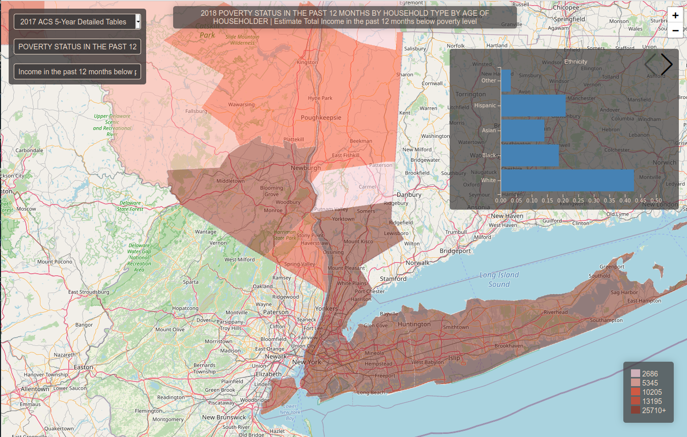

Census Godzilla
Census Godzilla is a comprehensive U.S. Census data viewer that lets the user visualize any American Community Survey dataset and provides contextual socioeconomic
indicators. The latter feature allows the user to conduct
preliminary exploratory analysis on how data is distributed across space in relation to their primary census variable visualized on the map.
Below a short presentation of the core features.
